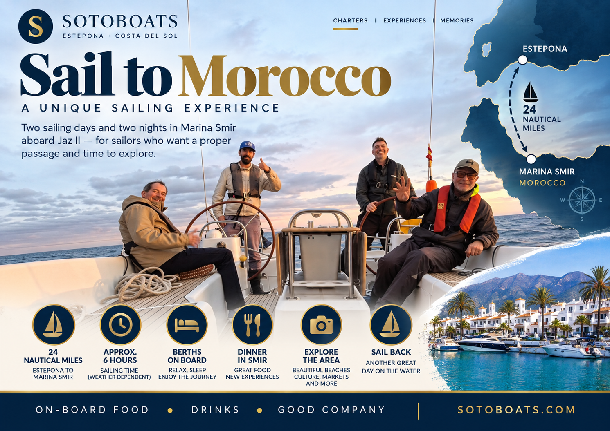
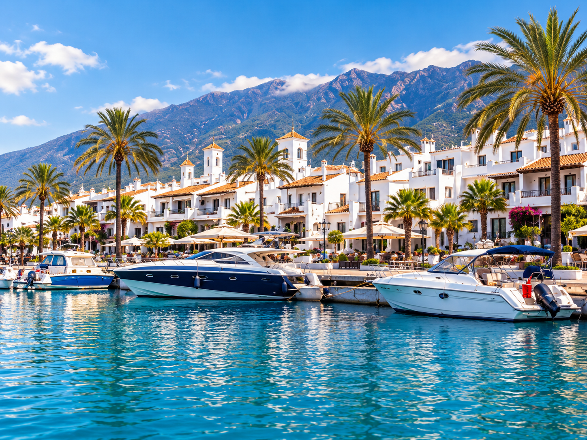
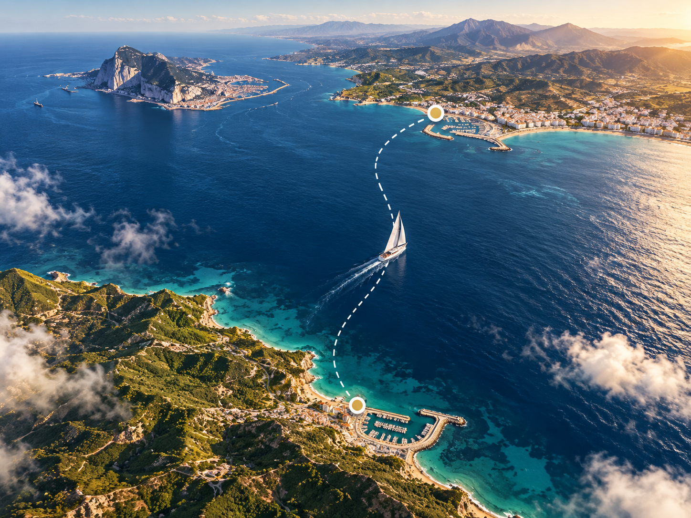
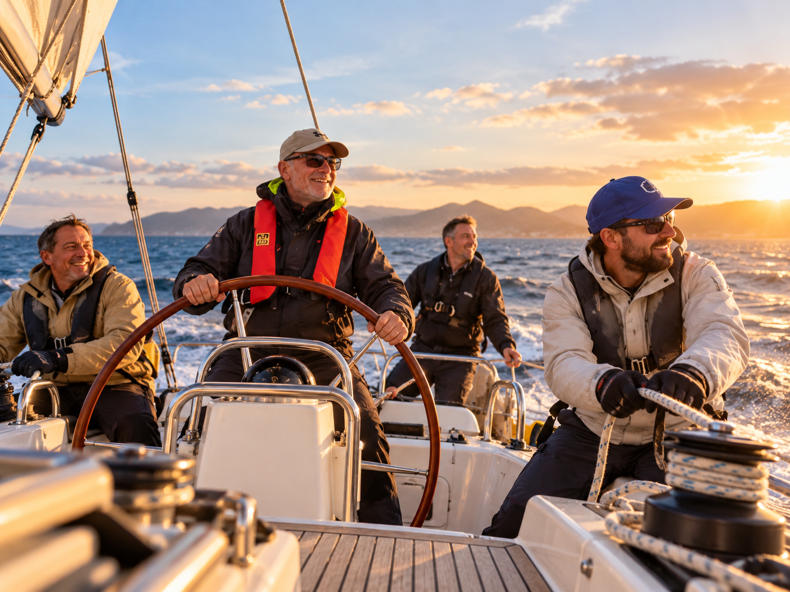

Trip highlights
The key details at a glance.
A compact overview of the crossing, time onboard, cost and what makes this Morocco passage different from a typical day charter.
Suggested itinerary
Three days with proper time on the water.
Planned as a real sailing experience — not a rushed touch-and-go. The outline below gives guests time for the crossing, Marina Smir, and the sail back.
DAY 1
Estepona to Marina Smir
Meet in Estepona, brief the crew, set off aboard Jaz II and cross to Marina Smir.
- Approx. 24 nautical miles and around 6 hours sailing time
- Guests take part in active sailing where appropriate
- Arrival, mooring and a relaxed first evening in Smir
- Dinner ashore and overnight onboard in the marina
DAY 2
Time in Smir
Enjoy a full day in and around Marina Smir before the return leg.
- Explore the marina, beach areas and local atmosphere
- Time for lunch, cafés, markets and strolling the waterfront
- Second evening and overnight in Marina Smir
- Relaxed pace with time to enjoy the destination properly
DAY 3
Sail back to Estepona
Depart Marina Smir and make the return passage to Spain.
- Another active day under sail aboard Jaz II
- Everyone onboard can stay involved in the sailing
- Weather, route and timings managed by the captain
- Arrival back in Estepona with a proper adventure behind you
What kind of trip is this?
An experience trip — not a passive cruise.
This Morocco option is best suited to guests who want more than a scenic boat day. It is for people who are happy being part of a real passage and understand that sailing is part of the experience.
Active sailing: all onboard are expected to be comfortable with a hands-on, sailing-led experience.
Weather matters: timings and conditions will always be led by the captain and the safe running of the boat.
Right fit: the enquiry form asks about sailing experience so Sotoboats can make sure the trip suits the group.
Marina Smir
What you’ll enjoy once you arrive.
The trip is about the passage and the destination — time in the marina, waterfront atmosphere and the feeling of a proper mini-adventure across the water.

Waterfront time
Spend proper time in Marina Smir rather than just touching in. Enjoy the marina setting, sea views and a slower pace once you arrive.

The crossing
The route from Estepona to Morocco is part of the appeal — a real passage that gives the trip its adventure feel and sailing focus.

Hands-on aboard Jaz II
This is a sailing-led trip aboard Jaz II, ideal for guests who want to be part of the day rather than simply watch it happen.
Ready to ask about dates?
Enquire now for the Morocco trip.
Use our enquiry form and tell us about your group, preferred dates and your sailing experience. That helps us confirm whether the Morocco passage is the right fit for you.
Enquire now
The enquiry form will ask for sailing experience so the team can assess suitability for this active sailing trip.